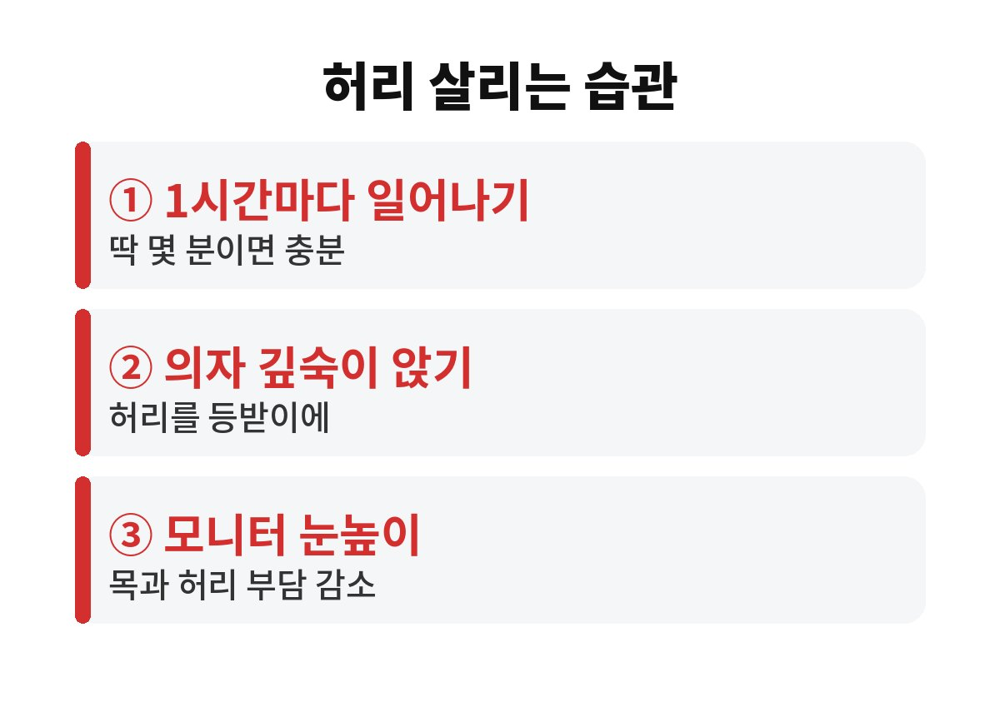

오래 앉아 허리 통증이 생겼다면 가장 먼저 할 일은 약이 아니라 1시간에 한 번 자리에서 일어나는 것입니다. 하루 대부분을 의자에서 보내는 직장인이라면, 내 허리는 지금 어떤 신호를 보내고 있는 걸까요?
서 있을 때보다 앉아 있을 때 허리뼈 사이의 디스크에는 더 큰 압력이 걸린다고 알려져 있습니다. 특히 등을 구부정하게 말고 앉으면 그 부담이 훨씬 커지죠. 거기에 같은 자세로 오래 있으면 허리를 받쳐 주는 근육이 굳고, 피 흐름도 느려져 뻐근함이 쌓입니다.
문제는 이게 하루아침에 오는 게 아니라는 점이에요. 처음엔 오후만 되면 뻐근한 정도지만, 몇 달 지나면 아침에 일어날 때부터 허리가 묵직해지는 분이 많습니다. 그래서 오래 앉아 허리 통증을 느끼기 시작했다면 일찍 습관을 바꾸는 쪽이 훨씬 이득이에요.

많은 전문가들이 한 자세로 1시간 이상 앉아 있지 말라고 권합니다. 꼭 운동을 해야 하는 건 아니에요. 일어나서 물 한 잔 마시고, 복도를 잠깐 걷고, 기지개를 켜는 것만으로도 굳은 근육이 풀리고 피가 다시 돕니다.
저도 처음엔 귀찮았는데요, 휴대폰 알람을 50분 뒤에 맞춰 두면 의외로 습관이 됩니다. 전화 받을 때 일어서서 받기, 프린터는 일부러 먼 곳에 두기 같은 작은 장치도 도움이 되죠. 핵심은 한 번에 오래 하는 게 아니라 자주 끊어 주는 겁니다.
의자에는 엉덩이를 등받이 끝까지 깊숙이 붙이고 앉으세요. 허리와 등받이 사이가 비면 작은 쿠션이나 말은 수건을 받쳐 주면 됩니다. 발바닥은 바닥에 편하게 닿게 하고, 무릎이 엉덩이보다 살짝 낮거나 비슷한 높이가 좋아요.
모니터는 눈높이에 맞추고 화면과는 팔 하나 길이 정도 떨어뜨려 주세요. 화면이 낮으면 고개가 숙여지면서 목과 허리가 같이 굽습니다. 다리를 꼬고 앉는 습관도 골반이 한쪽으로 기울어서 허리에 좋지 않으니 가능하면 줄여 보세요.
사무실에서 바로 할 수 있는 동작도 있어요. 의자에 앉은 채로 두 손을 깍지 껴 위로 쭉 뻗고 10초 정도 버텨 보세요. 그다음 상체를 좌우로 천천히 비틀어 주면 굳은 허리 옆 근육이 풀립니다. 한 번에 1분이면 충분하니 눈치 볼 일도 없죠.
걷기도 큰 도움이 됩니다. 점심시간에 10분만 걸어도 허리 주변 근육이 깨어나요. 엘리베이터 대신 계단을 한 층만 이용하는 것도 좋고요. 거창한 운동 계획은 금방 포기하게 되지만, 이런 작은 습관은 오래 갑니다.
대부분의 뻐근함은 자세와 습관만 바꿔도 좋아지지만, 그렇지 않은 경우도 있습니다. 다리까지 저리거나 당기는 느낌이 이어질 때, 쉬어도 밤에 더 아플 때, 발끝에 힘이 빠지는 느낌이 들 때는 미루지 말고 정형외과나 신경외과에서 진료를 받아 보세요.
또 통증이 몇 주 넘게 계속된다면 단순한 근육 뭉침이 아닐 수 있습니다. 참고 버티다 키우는 것보다 한 번 확인해 보는 편이 마음도 편하고 비용도 덜 듭니다.
퇴근 후에는 따뜻한 물로 샤워하며 허리를 풀어 주고, 잠잘 때는 너무 푹신한 매트리스보다 적당히 단단한 곳에서 편한 자세로 주무시는 것이 좋습니다. 옆으로 누울 땐 무릎 사이에 베개를 끼우면 허리 부담이 한결 줄어요.
무거운 물건을 들 때는 허리를 굽히지 말고 무릎을 굽혀서 몸에 붙여 드세요. 오래 앉아 허리 통증이 있는 상태에서 갑자기 무거운 걸 들면 삐끗하기 쉽습니다. 평소의 작은 조심이 큰 통증을 막아 줍니다.
마지막으로 수분과 체중도 허리와 무관하지 않습니다. 물을 자주 마시면 자연스럽게 화장실에 가려고 일어나게 되니 일석이조예요. 또 체중이 늘수록 허리에 실리는 하중도 커지니, 무리하지 않는 선에서 꾸준히 관리해 보세요. 허리는 한번 상하면 회복에 시간이 오래 걸립니다.
오늘 당장 할 수 있는 것은 어렵지 않습니다. 이 글을 다 읽었다면 일단 자리에서 일어나 어깨를 한 번 돌려 보세요. 여러분은 하루에 몇 번쯤 일어나시나요? 댓글로 나만의 허리 관리 비법도 알려 주시고, 도움이 되셨다면 구독해 주세요.
본 글은 일반적인 건강 정보이며 진단·치료를 대신하지 않습니다. 증상이 있다면 전문의 상담을 권장합니다.